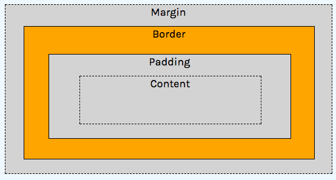

Block display.
CSS stands for
"Cascading" refers to the way the style are implemented, with external, internal and inline style rules being applied to pages in order.
CSS uses selectors to target elements and add visual styles. Any HTML element, such as body or p can be used as a CSS selector, although the default styles and behaviors of HTML elements vary. Every selector has one or multiple values that define a corresponding property.
CSS defines rules for the colors, fonts, dimensions and positions of elements on a web page.
There are three ways to include CSS styles in an HTML document.
External stylesheets are linked into the HTML page by a tag. These styles can be applied to multiple HTML pages:
<link rel="stylesheet" href="style.css" type="text/css" />Internal stylesheets can be added anywhere inside of an HTML document, using the style tag, but are typically found in the <head> section. These styles will only apply to elements on a single page, but will apply to all elements of that page.
<style>
a { color: pink; }
a:hover { color: blue; }
</style>Inline styles are added inside of an HTML element as an attribute and will apply to that element only.
<div style="background:blue;padding:5px;"></div>Along with tag based selectors, CSS rules can be applied by adding a class or id to a tag. Class and ID work essentially the same way but have different uses and syntax.
Classes describe a basic set of styles that can be applied multiple tags in an HTML page. In HTML a class is added to an element with the class attribute.
<div class="content"></div>Classes can be applied to multiple elements in a layout and multiple classes can be applied to one element:
<div class="content post active"></div>
<div class="content post"></div>
<div class="content post"></div>.content {
background-color: lightgray;
font-size: 1em;
width: 40px;
}
.active {
border: 1px solid blue;
}IDs can only be used once, on one element:
<div id="header"></div>
<div id="main"></div>Classes and IDs can be contained in the same div:
<div id="header" class="content"></div>
<div id="main" class="content post"></div>In CSS, rules for classes use a period or full stop . while IDs use the hashtag #.
#header {
background-color: gray;
font-size: 2em;
height: 60px;
}We can also use the relationships between HTML elements to create styles. An element that is a child of another element can be selected with a space between two selector tags. For example, the following HTML:
<ul>
<li><a href="index.html">Home</a></li>
<li><a href="about.html">About</a></li>
</ul>Can be styled with the following rules:
ul {
width: 200px;
height: 20px;
list-style: none;
}
ul li {
display: inline;
}
ul li a {
color: blue;
}
ul li a:hover {
color: darkblue;
}There are selectors for other relationships beyond the ancestor/parent to descendant/child. See all of the possibilities for selectors here.
a:hover { } is a pseudo selector. Pseudo selectors refer to interactive states that change after the page is loaded. :hover is when the mouse hovers over an element.
:visited, :active and :focus are other common pseudo selectors.
The position, size and layout of HTML elements is determined by the CSS box model, the display property and floats. Without these rules, HTML pages are rendered in the order of the elements from the top to the bottom.
All block HTML elements can be assigned properties for their border, padding and margin, as well as width and height to describe the dimensions of the content.
The padding area has the color of the background of the element.
The margin area is transparent.
Measurement properties in CSS can use several different units.
Pixels are absolute units, referring to the exact number of pixels of the device screen.
border-width: 10px;The em unit is relative to the base font-size of the document. If the document font-size is 14px, 1em is 14px.
margin-top: 1em;Percentage units refer to the percentage of the containing element, typically the body or document window width.
width: 50%;The width and height of each block element can also be set in px, em or %.
HTML elements without width or height properties will expand to fit the content inside of them.
These rules can also be applied to one side of the box, for eithing padding or margin, using margin-top, margin-right, margin-bottom and margin-left.
The side can also be combined into one rule. margin: 1em; will apply a 1em margin to each side. margin: 1em 0; will apply a 1em margin to the top and bottom and a 0 margin to the right and left sides. Using four numbers, we can apply in this order- top, right, bottom, left (clockwise around the circle), so, margin: 1em 0 10px 5px; is equivalent to:
margin-top: 1em;
margin-right: 0;
margin-bottom: 10px;
margin-left: 5px;Other properties include auto, which will attempt to fill the space between an element and its parent, inherit, which will inherit the rule from the parent element, and initial, which will set it to the initial property of the element tag name.
The display property determines the horizontal space of each element. Elements with display: block; will take up the entire width of the page, their own “block”. Block elements can be assigned box model properties. Inline elements can not. Elements that default to block display include h1-h6, div, ul, li, p and others. Default inline elements include span, em, strong and a.
Block display.

Inline display.
Elements can also be set to display: none; which makes them not appear in the layout. This has advantages that we’ll look at next class in combination with inline-block, which allows an inline element to be given padding, margin and border, as well as width and height.
Before going into positions, we should introduce the div HTML tag: <div>. This stands for division. It is a generic HTML element used for creating divisions of content. They default to block display. They can be used to organize different sections of content on an HTML page.
Positioning is tricky so check out three articles that explain it fairly well in different ways:
CSS3 has introduced experimental features which have gained near universal support for doing simple animations and transition with CSS, which used to only be available with JavaScript.
a:hover { transition: color 1s ease-in-out; }Animations use the same transition syntax with keyframes.